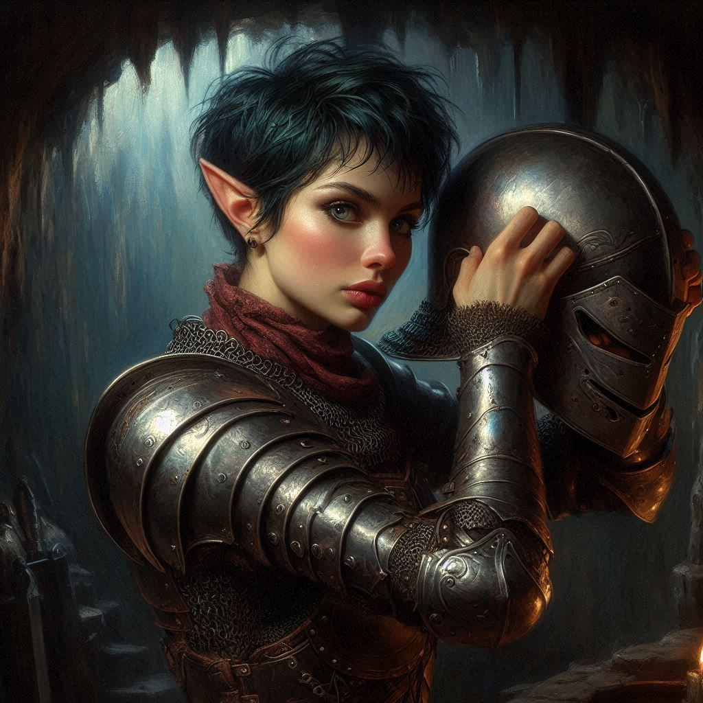

The Sting of Betrayal
You stand over the bodies of the fallen mercenaries, breathing hard, your sword still warm from the fight. The aftermath of the battle hums around you, but your mind is elsewhere—on the decisions that need to be made. Liora is exhausted, her magic drained, and Hawthorn's wounds, though healed, have left her weaker than before.
“I can’t go any farther like this,” Hawthorn admits, her voice filled with reluctant defeat. “Neither can Liora.”
You turn to her, noting the guilt in her eyes. Despite her arrogance, there’s a sense of responsibility in her now, something she didn’t have before. "There’s a way," she says, drawing out a map from beneath her cloak. "A shortcut to the portal chamber. If you take this path through the lower tunnels, you’ll reach it faster. I… I can go back with Liora and bring reinforcements."
Baider grunts from behind you, his massive form towering over you both. “Reinforcements could take too long. We can’t wait for them.”
Hawthorn shakes her head, her voice low but urgent. “It’s your best chance. Take the shortcut, stop them before they open the portal. We’ll return as fast as we can.”
You study the map, tracing the shortcut she’s marked with your finger. It leads deep into the heart of Hemlock Caverns, through winding tunnels that snake beneath the known routes. It’s risky, but you don’t have the luxury of time. Every second brings Varis and Jorsh closer to unleashing the darkness that lies beneath.
You hand the map back to Hawthorn and nod. “Go. And hurry.”
With that, you part ways. Hawthorn and Liora, still drained but determined, retreat into the shadows of the caverns. You, Elias, and Baider venture deeper into the maze, guided by the path on the map.
The air grows colder as you descend, the walls narrowing around you. Your footfalls are quiet, careful on the uneven ground, as you pass through tunnels slick with moisture. The deeper you go, the more oppressive the darkness feels, as though the weight of the mountain itself presses down on you.
Elias walks beside you, his bow ready in his hands. He glances at you, concern in his eyes. “Do you trust her?” he whispers.
You hesitate, then nod. “She gave us no reason not to. And we don’t have any other choice.”
Baider, a few steps ahead, growls softly. “Talking can wait. We’re not alone.”
You freeze, your heart leaping into your throat. Ahead, the flicker of torchlight bounces off the cavern walls. You press yourself against the rock, peering into the open chamber ahead. A squad of mercenaries stands around a makeshift camp, their voices low, unaware of your presence.
You exchange a glance with Baider and Elias. You’ve done this before—strike fast, strike hard. With a silent nod, you move forward.
The attack is swift. Baider charges in, his warhammer crashing down on the first mercenary with a sickening crack. Elias’s arrows fly, silent and deadly, dropping two more before they can react. You dart between them, your blade finding its mark in the chaos. Within moments, the mercenaries lie unconscious, subdued without a chance to raise the alarm.
“We need their armor,” you say, stripping a fallen mercenary of his cloak and armor. Elias follows suit, donning the dark, worn leather that smells faintly of sweat and blood. You pull the hood low over your face, disguising your features as best as you can.
“Ready?” you ask Elias, tightening the straps on your armor.
He nods, his eyes sharp beneath the cloak’s shadow. “Ready.”
You leave Baider to scout the perimeter as you and Elias continue, now disguised as the very mercenaries you’re hunting. The tunnels grow narrower and the air heavier with the smell of damp earth and sulfur. Every step brings you closer to the portal chamber—but also closer to whatever dangers lurk within the depths.
It’s when you round the next corner that you hear it: a faint skittering sound, like claws scraping against stone. You freeze, instinctively drawing your sword. The sound grows louder, more menacing, until the ground beneath your feet trembles with the movement of something large, something many-legged.
Before you can react, they descend—giant scorpions, their massive pincers snapping at the air, their venomous tails poised to strike. There’s no time to flee. The first one lunges toward Elias, its stinger glistening in the torchlight.
“Elias!” you shout, slashing at the creature’s armored body. But it’s too fast—its tail strikes, piercing through Elias’s cloak and into his shoulder. He cries out, staggering backward as the venom takes hold, paralyzing him in seconds.
You spin, trying to fend off the second scorpion, but it’s overwhelming. Its claws snap inches from your face, and as you drive your sword into its side, its stinger lashes out, sinking into your arm. Pain explodes through you, hot and burning. You gasp, your limbs going numb as the venom spreads through your body.
You fall to your knees, the weight of your sword slipping from your grasp. Your vision blurs, and you can barely make out Baider’s voice shouting in the distance. He’s fighting, you know that, but you can’t hold on.
In the haze of the venom, you think of Jorsh—of Varis and the portal. The darkness they seek to unleash, the destruction that will follow if they succeed. You had hoped… you had hoped that someone would stop them, that your mission would not end like this. But the coldness creeping through your veins tells you otherwise.
The scorpions close in, their hunger evident in their twitching pincers. And as your body succumbs to the poison, all you can do is pray that somehow, somewhere, someone will finish what you started.